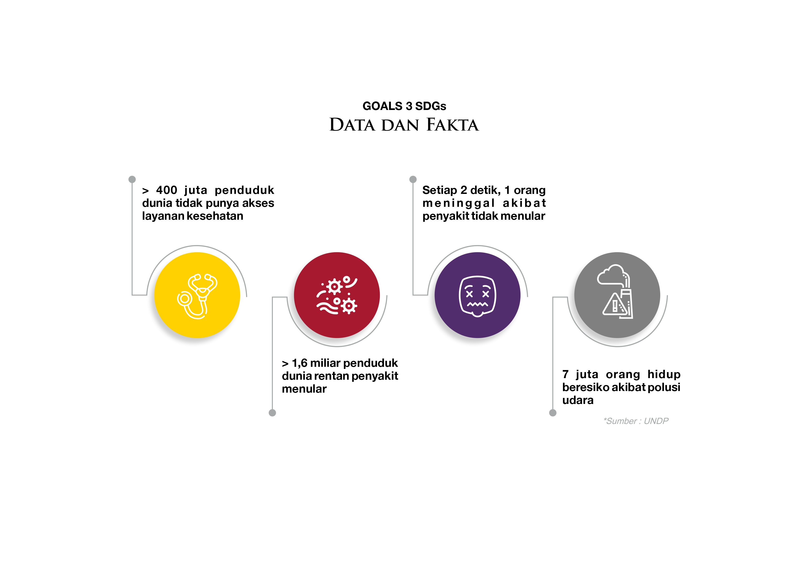

Kesehatan Anda Penting
Jelajahi tips dan informasi untuk menjalani gaya hidup sehat. Kami berkomitmen untuk memberikan informasi yang bermanfaat demi kesejahteraan Anda. Terapkan kebiasaan hidup sehat seperti pola makan seimbang, olahraga teratur, dan tidur yang cukup untuk menjaga kesehatan tubuh dan pikiran Anda. Temukan saran praktis dan inspirasi untuk mencapai gaya hidup sehat di setiap tahap perjalanan Anda. Mari bersama-sama meraih hidup sehat dan bahagia!
